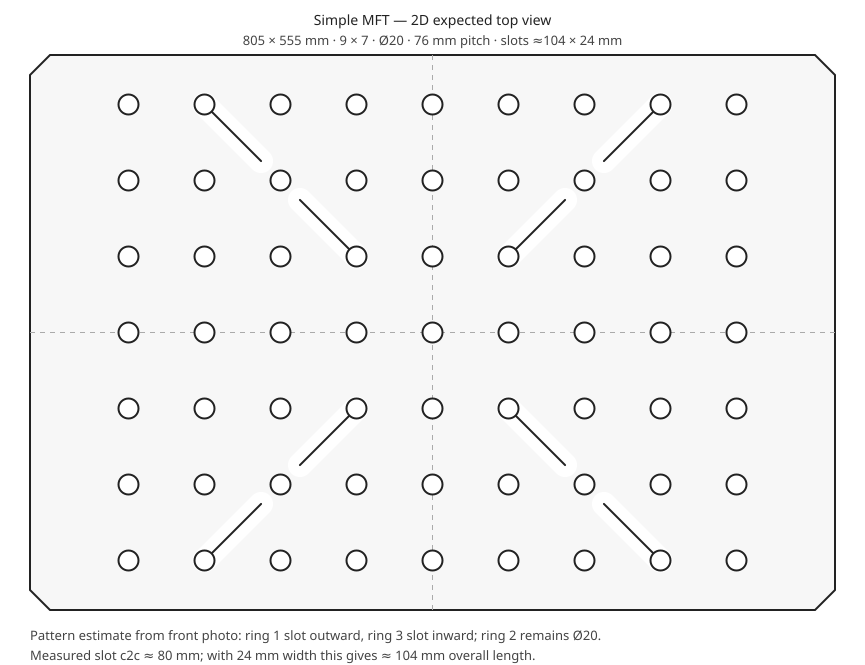

Model preview

Native SolidCraft image, matching this source revision. Click to view full size.
A CRAFTMAKER-inspired worktop study: one 18 mm native Box, four straight 20 mm corner chamfers, one Ø20 source hole repeated as a native 9 × 7 SolidCraft rectangular pattern at 76 mm pitch, and eight photo-measured native diagonal Slots. The frame, guide rail and accessories are outside this model.
Files
Download the original Python sources and generated command plan.
Command JSON describes CAD actions; it is not an already-saved .sc design.
Construction stages
- Box — 805 × 555 × 18 mm
- Chamfer — four straight 20 × 20 mm plan-view corner cuts
- Dog hole — one Ø20 through-hole source feature
- RectangularPattern — 9 columns × 7 rows at 76 mm pitch
- Clamp Slots — eight native SlotCenterToCenter2D cuts, ≈104 × 24 mm
- Keep the ring-2 diagonal Ø20 holes between the inner and outer Slots
Open this model in SolidCraft Web
The native editable model is available in SolidCraft’s official web application, hosted at docs.solidcraft.io.
External website: selecting the link below opens the SolidCraft website in a new tab. Your browser downloads the web application from SolidCraft’s servers, which generates network traffic for SolidCraft. The .sc model itself is hosted here on our GitHub Pages site. We do not embed the application.
You are leaving brainboxemb.github.io for docs.solidcraft.io. If you prefer not to use the external web app, download the native .sc file and open it locally in the matching SolidCraft release.
Reference and 2D expectation


The 76 mm pitch, 20 mm corner cuts and ≈104 × 24 mm Slot dimensions are photo-based estimates, not manufacturer specifications.
Python model
"""Simple MFT worktop inspired by the Craftmaker S30 replacement top.
The plate envelope and dog-hole diameter follow the published replacement-top
dimensions. The 76 mm pitch, 20 mm corner cuts and clamp-slot dimensions are
photo-based design estimates, not manufacturer dimensions.
The current 2D expectation is calibrated from the front product photo:
- slot width about 24 mm;
- slot end-centre distance about 80 mm, giving about 104 mm overall length;
- per diagonal arm, the inner slot starts on grid ring 1 and extends outward;
- the outer slot starts on grid ring 3 and extends inward;
- grid ring 2 remains a normal dog hole between the two slots.
"""
from math import sqrt
class SimpleMFT:
width = 805.0
depth = 555.0
thickness = 18.0
hole_diameter = 20.0
hole_pitch = 76.0
corner_chamfer = 20.0
COLUMNS = 9
ROWS = 7
SLOT_WIDTH = 24.0
SLOT_CENTER_DISTANCE = 80.0
def build(self):
half_w = self.width / 2
half_d = self.depth / 2
c = self.corner_chamfer
# Keep a rectangular native base so attached Sketches use the native
# rectangular face reference supported by SCPF.
board = Box(
self.width,
self.depth,
self.thickness,
anchor=Anchor.BOTTOM,
)
# Chamfer the four vertical corner edges. An equal 20 mm chamfer on a
# vertical edge produces the straight 20 x 20 mm plan-view corner cut
# while retaining the rectangular Box as the anchor base.
edge_z = self.thickness.value / 2
board = board.chamfer(
c,
edges=[
(-half_w, -half_d, edge_z),
(half_w, -half_d, edge_z),
(half_w, half_d, edge_z),
(-half_w, half_d, edge_z),
],
)
with Sketch(name="Dog hole", on=board, parent=Anchor.TOP) as hole:
hole.add(
Circle2D(d=self.hole_diameter),
offset=(-4 * self.hole_pitch, -3 * self.hole_pitch),
)
hole_cut = hole.extrude(Depth.THROUGH_ALL)
board = board - hole_cut
board = board.rectangular_pattern(
hole_cut,
count=self.COLUMNS,
spacing=self.hole_pitch,
direction=Axis.X,
count2=self.ROWS,
spacing2=self.hole_pitch,
direction2=Axis.Y,
)
# SolidCraft 0.42 native Slot creators require fixed numeric points.
# Read the current parameter values explicitly instead of passing Forge
# expressions into the Slot command.
pitch = float(self.hole_pitch.value)
slot_center_distance = float(self.SLOT_CENTER_DISTANCE)
slot_width = float(self.SLOT_WIDTH)
along_axis = slot_center_distance / sqrt(2)
for name, sx, sy in (
("Slot NE", +1, +1),
("Slot NW", -1, +1),
("Slot SW", -1, -1),
("Slot SE", +1, -1),
):
inner_ring = (sx * pitch, sy * pitch)
inner_outward = (
sx * (pitch + along_axis),
sy * (pitch + along_axis),
)
outer_ring = (sx * 3 * pitch, sy * 3 * pitch)
outer_inward = (
sx * (3 * pitch - along_axis),
sy * (3 * pitch - along_axis),
)
with Sketch(name=name, on=board, parent=Anchor.TOP) as slots:
SlotCenterToCenter2D(
inner_ring,
inner_outward,
slot_width,
)
SlotCenterToCenter2D(
outer_inward,
outer_ring,
slot_width,
)
board = board - slots.extrude(Depth.THROUGH_ALL)
return board
Native SolidCraft command sequence (SCPF)
- Named CAD parameterparameters.add · name: width
{ "command": "parameters.add", "params": { "name": "width", "expression": "805", "unit": "mm" } } - Named CAD parameterparameters.add · name: depth
{ "command": "parameters.add", "params": { "name": "depth", "expression": "555", "unit": "mm" } } - Named CAD parameterparameters.add · name: thickness
{ "command": "parameters.add", "params": { "name": "thickness", "expression": "18", "unit": "mm" } } - Named CAD parameterparameters.add · name: corner_chamfer
{ "command": "parameters.add", "params": { "name": "corner_chamfer", "expression": "20", "unit": "mm" } } - Named CAD parameterparameters.add · name: hole_diameter
{ "command": "parameters.add", "params": { "name": "hole_diameter", "expression": "20", "unit": "mm" } } - Named CAD parameterparameters.add · name: hole_pitch
{ "command": "parameters.add", "params": { "name": "hole_pitch", "expression": "76", "unit": "mm" } } - Box primitivesolid.box · body_name: SimpleMFT
{ "command": "solid.box", "params": { "length": "width", "width": "depth", "height": "thickness", "corner": [ "-width / 2", "-depth / 2", 0 ], "body_name": "SimpleMFT" } } - Chamfered edgesolid.chamfer
{ "command": "solid.chamfer", "params": { "edges": [ [ -402.5, -277.5, 9.0 ], [ 402.5, -277.5, 9.0 ], [ 402.5, 277.5, 9.0 ], [ -402.5, 277.5, 9.0 ] ], "distance": "corner_chamfer", "body": "SimpleMFT" } } - Create sketchsketch.create · name: Dog hole, plane: XY
{ "command": "sketch.create", "params": { "plane": "XY", "name": "Dog hole", "offset": "(thickness)" } } - Circlesketch.circle.center
{ "command": "sketch.circle.center", "params": { "center": [ "(hole_pitch * -4)", "(hole_pitch * -3)" ], "diameter": "hole_diameter" } } - Finish sketchsketch.finish
{ "command": "sketch.finish", "params": {} } - Extrusion / cutsolid.extrude · name: Dog hole, direction: negative, operation: cut
{ "command": "solid.extrude", "params": { "operation": "cut", "targets": [ "SimpleMFT" ], "name": "Dog hole", "through_all": true, "direction": "negative" } } - Rectangular feature patternsolid.pattern.rectangular
{ "command": "solid.pattern.rectangular", "params": { "features": [ "Dog hole" ], "dir1": [ 1.0, 0.0, 0.0 ], "count1": 9, "spacing1": "hole_pitch", "alignment": "right", "reversed": false, "dir2": [ 0.0, 1.0, 0.0 ], "count2": 7, "spacing2": "hole_pitch", "alignment2": "right", "reversed2": false } } - Create sketchsketch.create · name: Slot NE, plane: XY
{ "command": "sketch.create", "params": { "plane": "XY", "name": "Slot NE", "offset": "(thickness)" } } - Center-to-center Slotsketch.slot.center_to_center
{ "command": "sketch.slot.center_to_center", "params": { "p0": [ 76.0, 76.0 ], "p1": [ 132.5685424949238, 132.5685424949238 ], "width": 24.0 } } - Center-to-center Slotsketch.slot.center_to_center
{ "command": "sketch.slot.center_to_center", "params": { "p0": [ 171.4314575050762, 171.4314575050762 ], "p1": [ 228.0, 228.0 ], "width": 24.0 } } - Finish sketchsketch.finish
{ "command": "sketch.finish", "params": {} } - Extrusion / cutsolid.extrude · name: Slot NE, direction: negative, operation: cut
{ "command": "solid.extrude", "params": { "operation": "cut", "targets": [ "SimpleMFT" ], "name": "Slot NE", "through_all": true, "direction": "negative" } } - Create sketchsketch.create · name: Slot NW, plane: XY
{ "command": "sketch.create", "params": { "plane": "XY", "name": "Slot NW", "offset": "(thickness)" } } - Center-to-center Slotsketch.slot.center_to_center
{ "command": "sketch.slot.center_to_center", "params": { "p0": [ -76.0, 76.0 ], "p1": [ -132.5685424949238, 132.5685424949238 ], "width": 24.0 } } - Center-to-center Slotsketch.slot.center_to_center
{ "command": "sketch.slot.center_to_center", "params": { "p0": [ -171.4314575050762, 171.4314575050762 ], "p1": [ -228.0, 228.0 ], "width": 24.0 } } - Finish sketchsketch.finish
{ "command": "sketch.finish", "params": {} } - Extrusion / cutsolid.extrude · name: Slot NW, direction: negative, operation: cut
{ "command": "solid.extrude", "params": { "operation": "cut", "targets": [ "SimpleMFT" ], "name": "Slot NW", "through_all": true, "direction": "negative" } } - Create sketchsketch.create · name: Slot SW, plane: XY
{ "command": "sketch.create", "params": { "plane": "XY", "name": "Slot SW", "offset": "(thickness)" } } - Center-to-center Slotsketch.slot.center_to_center
{ "command": "sketch.slot.center_to_center", "params": { "p0": [ -76.0, -76.0 ], "p1": [ -132.5685424949238, -132.5685424949238 ], "width": 24.0 } } - Center-to-center Slotsketch.slot.center_to_center
{ "command": "sketch.slot.center_to_center", "params": { "p0": [ -171.4314575050762, -171.4314575050762 ], "p1": [ -228.0, -228.0 ], "width": 24.0 } } - Finish sketchsketch.finish
{ "command": "sketch.finish", "params": {} } - Extrusion / cutsolid.extrude · name: Slot SW, direction: negative, operation: cut
{ "command": "solid.extrude", "params": { "operation": "cut", "targets": [ "SimpleMFT" ], "name": "Slot SW", "through_all": true, "direction": "negative" } } - Create sketchsketch.create · name: Slot SE, plane: XY
{ "command": "sketch.create", "params": { "plane": "XY", "name": "Slot SE", "offset": "(thickness)" } } - Center-to-center Slotsketch.slot.center_to_center
{ "command": "sketch.slot.center_to_center", "params": { "p0": [ 76.0, -76.0 ], "p1": [ 132.5685424949238, -132.5685424949238 ], "width": 24.0 } } - Center-to-center Slotsketch.slot.center_to_center
{ "command": "sketch.slot.center_to_center", "params": { "p0": [ 171.4314575050762, -171.4314575050762 ], "p1": [ 228.0, -228.0 ], "width": 24.0 } } - Finish sketchsketch.finish
{ "command": "sketch.finish", "params": {} } - Extrusion / cutsolid.extrude · name: Slot SE, direction: negative, operation: cut
{ "command": "solid.extrude", "params": { "operation": "cut", "targets": [ "SimpleMFT" ], "name": "Slot SE", "through_all": true, "direction": "negative" } }